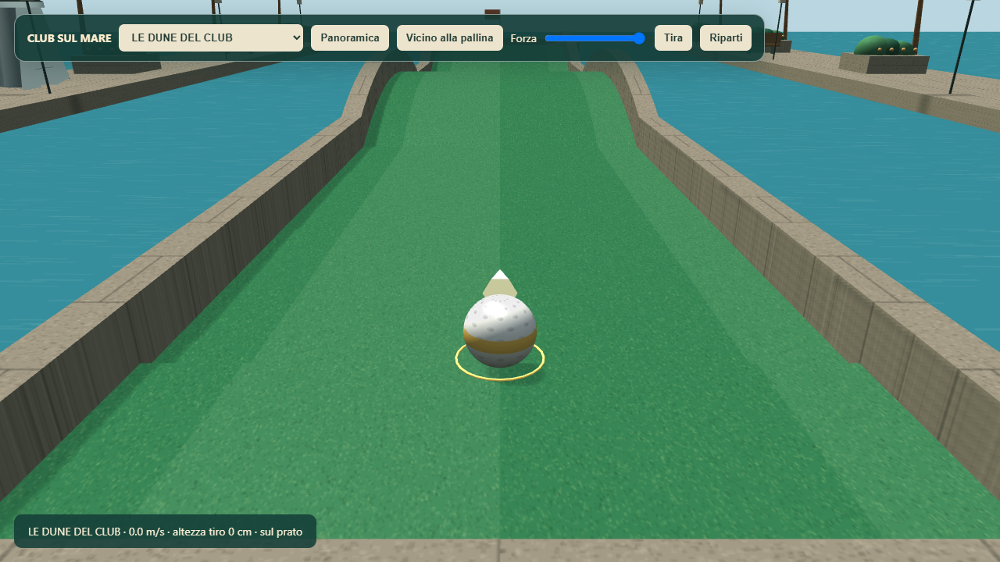
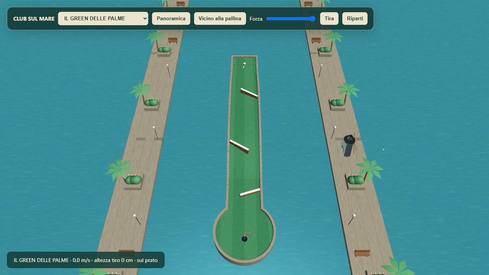
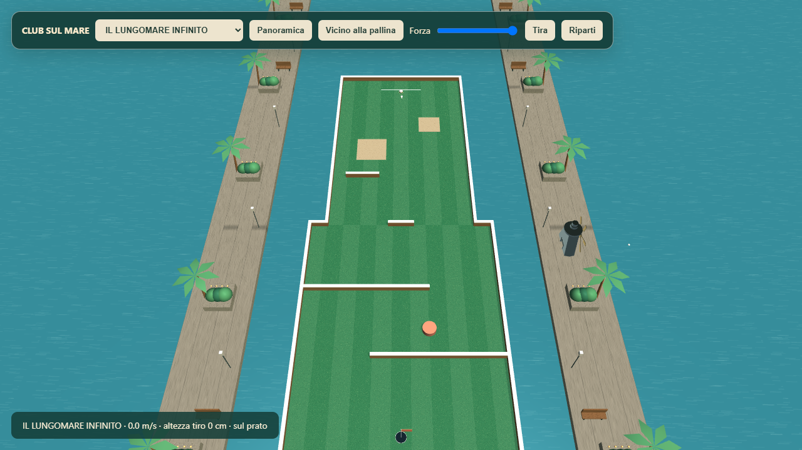

PARTY GAME · MINIGOLFUn tiro dosato.
Un club tutto nuovo.
Prato con trama e taglio a strisce, pietra, legno, palline con fossette e fascia colorata. Due nuove piste 3D votabili, ricavate dai modelli originali, con rampe, sponde e green circolari.
15,5 cmsaltello massimo misurato12 mappeincluse Dune e Green delle Palme≈60 FPScampione breve · 5 giocatori
Fino all’82% di potenza il putt resta rasoterra. Oltre la soglia, la palla compie un piccolo salto progressivo: il potenziamento non lo trasforma in un lancio. Se cade fuori pista, torna alla partenza della buca.

LE DUNE DEL CLUB — rampe ondulate e superfici fisiche ricavate dal modello 3D.
IL GREEN DELLE PALME — tre sponde oblique adattate all’altezza effettiva del terreno.
Anche le dieci piste esistenti ricevono i nuovi materiali e l’ambientazione del club.Verificati salto a 30/60/120 Hz, gravità, cadute, imbucate, contatti con le sponde, abilità, turni, bot e camera. Entrambe le nuove piste sono state imbucate dalla partenza usando il solver reale, senza teletrasporti.
La prova prestazionale usa cinque telefoni, 1280×720 e una sola camera condivisa, come nel minigolf. Campione di circa 4 secondi: 60,0 FPS medi, p95 16,8 ms. Non è una misura con cinque visuali separate né una garanzia su ogni dispositivo.